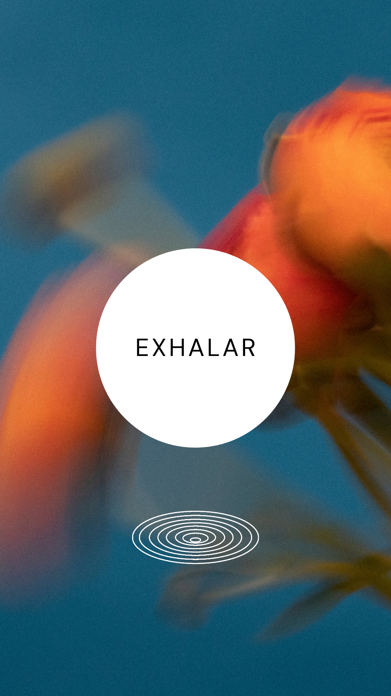

El kundalini yoga es uno de los estilos de yoga más completos, ya que trabaja de forma global el cuerpo y la mente. Se trata de un importante componente espiritual perfecto si quieres trabajar esta parte de ti. Si decides probar varias clases de kundalini sentirás que cada una de ellas es diferente a la anterior, esto es así por las diferentes técnicas de yoga que se utilizan en este estilo.
Lo bonito de las palabras es que a veces ni ellas saben como expresarse... porque hay significados que no se encuentran en las letras, ni en el entendimiento. Hay experiencias que solo pueden vivirse, experimentarse, sentirse. Porque aunque suene místico, la energia dibuja, envuelve, atraviesa, circula, se estanca, convulsiona y vuelve a transitar... ayer corrí por bosques, nadé en aguas cristalinas, me dejé llamar por cielos abiertos, una voz femenina, madura y sabia, alzaba de forma contundente un mensaje que ya conocía pero no sabría volver a descifrar.
Hola! Quería daros las gracias por la sesión del otro día ha sido un antes y un después.Realmente me ha permitido vaciarme, liberar totalmente sin necesidad de ponerle etiquetas a lo que estaba liberando y sanando sin necesidad de que la mente entre en el juego y gracias a que la mente no interviene simplemente siento que es una sanación pura. Gracias, gracias, gracias.
Mi nombre es Alexia, y mi experiencia con innerdance ha sido muy transformadora, y enriquecedora. Un viaje por todo mi sistema de creencias y emociones, llevo desde los 17 años yendo a todo tipo de terapias alternativas, y se ha convertido en una de mis favoritas.

Mi nombre es Ana Victoria, soy facilitadora de kundalini innerdance. El kundalini es una terapia con la que podemos conectar a un nivel muy profundo con nuestro yo interior, nuestro yo autentico, para resolver posibles conflictos internos, meidos, pasiones que la sociedad nos ha hecho olvidar o esconder... para asi ser de nuevo la version mas autentica de nosotros mismos.